今年のテーマは造熱!!
東京造形大学の学生らは、造るという人間的活動に対して日々、懸命に向き合っています。その熱は、ただ強く激しい、一面的なものではありません。ある人にとっては牧歌的で優しく、ある人にとっては苦く、直視することを避けたくなるものかもしれません。しかし、逃げずに向き合った先にこそ志の強い、変容し続ける自由な「造熱」があります。


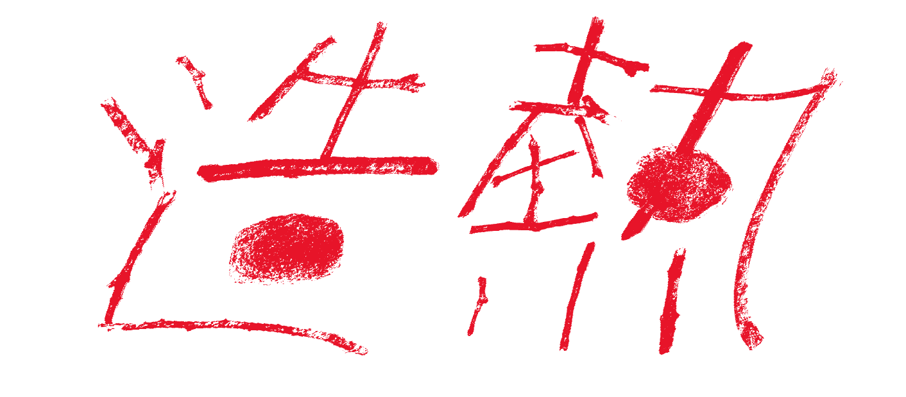
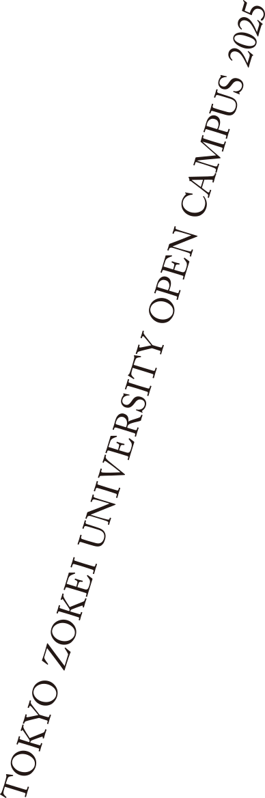
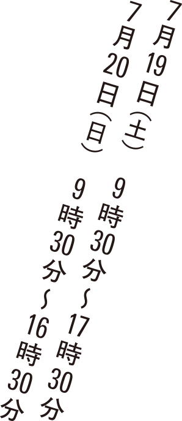
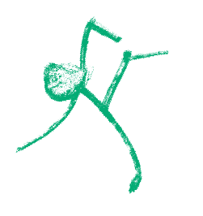
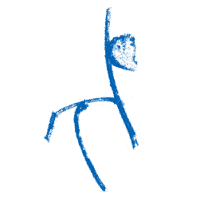
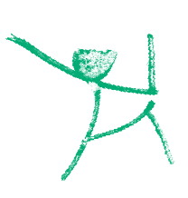
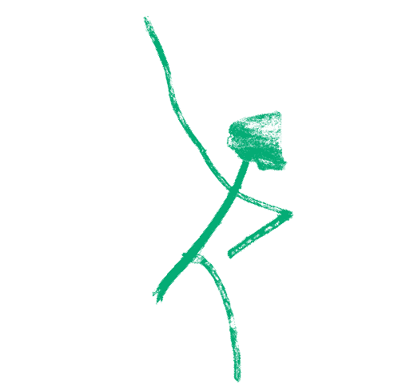
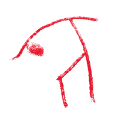
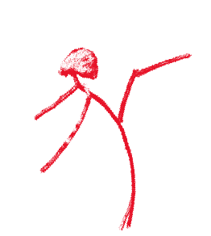
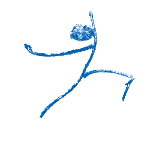
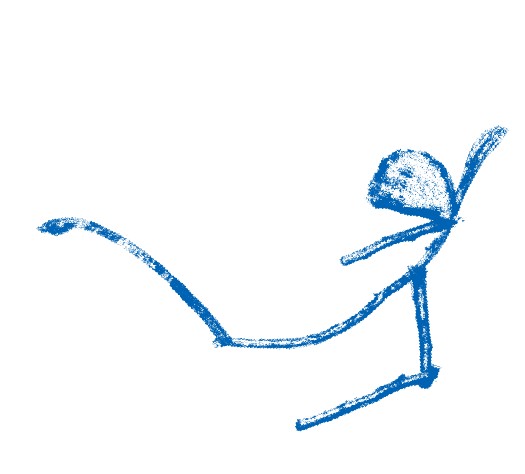
当日は作品展示・上映はもちろん、体験授業や学生のプレゼンテーションによる作品講評会、各専攻領域のさまざまなワークショップも数多く企画しています。緑に囲まれた自然豊かな東京造形大学のキャンパスで、どんなデザインと美術の学びがあるのか？ぜひ自身の五感で体験しにいらしてください。
※オープンキャンパスで教員による大学院入試の事前相談は行っておりません。
東京造形大学の学生らは、造るという人間的活動に対して日々、懸命に向き合っています。その熱は、ただ強く激しい、一面的なものではありません。ある人にとっては牧歌的で優しく、ある人にとっては苦く、直視することを避けたくなるものかもしれません。しかし、逃げずに向き合った先にこそ志の強い、変容し続ける自由な「造熱」があります。
「造熱」という言葉自体はここで提示された新しい言葉ではなく、本校学生らや、これから訪れる皆さんにも備わってきているものだと考えています。オープンキャンパスで受け取った熱を信じて自分の中に灯していただけましたらこれ以上の嬉しいことはありません。
※写真はイメージです。
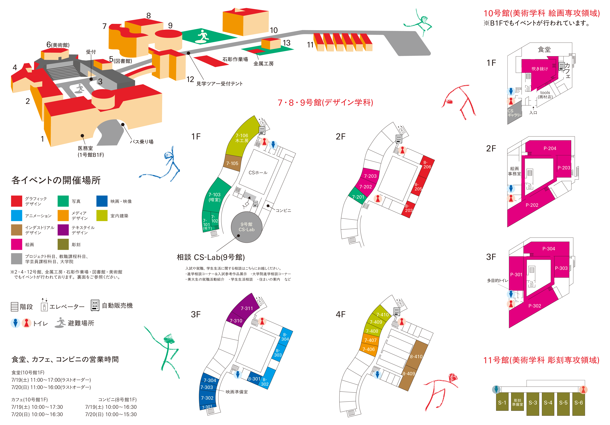
ご来場にあたっては、以下のお願いを事前にご確認ください。
①当日、37.5度以上の発熱症状がある場合は、参加をお控えください。
②自家用車でご来校される場合、キャンパス内に駐車場はご用意しておりませんので、本学の最寄り駅（相原駅）にあるコインパーキングをご利用く ださい。当日は、JR横浜線 相原駅よりスクールバスを運行します。なお、相原駅から本学までは徒歩約15分ですので、徒歩で来校することも可能です。
③当日、食堂やカフェテリアは営業しておりますので、昼食にご利用いただけます。（それ以外の場所での食事はご遠慮ください。）
④オープンキャンパスで教員による大学院入試の事前相談はできません。

RADIO造熱源は学生のリアルな声が聴けるラジオです。
専攻ごとの造熱源を知ることが出来る貴重な機会！ぜひ聴いてみてください。

造熱の工房は東京造形大学の石と枝を組み合わせて画像を作れる場所です。
自分だけの造熱オブジェクトを作ろう！
東京造形大学
〒192-0992 東京都八王子市宇津貫町1556
TEL：042-637-8111
交通：JR横浜線相原駅よりスクールバス5分・徒歩15分
https://www.zokei.ac.jp